图形计数可以训练孩子的空间想象能力和对几何图形的认知能力，能让孩子掌握基本图形的特征。
一般5～7岁的孩子，已经能够熟练地认知三角形、正方形、圆形等各种基本图形，能够认识一些基本的立体图形，如正方体、圆柱体、球体等。孩子只有对形体的特征理解得非常透彻，才能对图形进行计数，同时图形计数还涉及简单的统计学知识，能够从侧面训练孩子有序列举事物的能力。
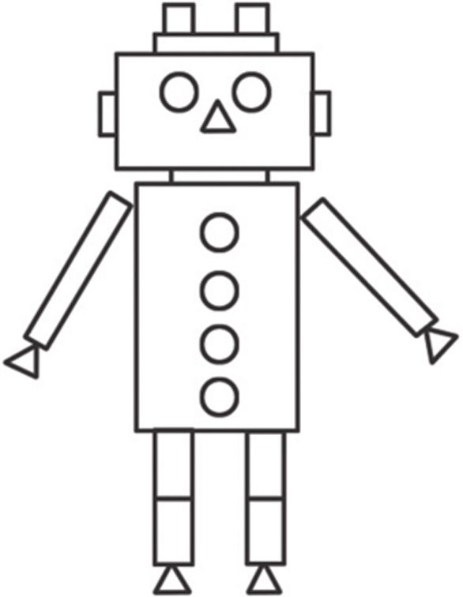
典型例题 1 你能数出下面的3个图形中分别有几个三角形吗？
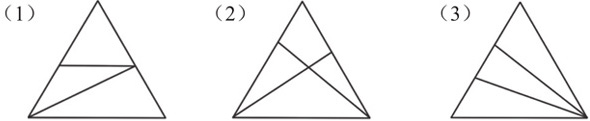
数图形（1）。先数小三角形，如下图所示，有3个小三角形，再逐步数小三角形组合成的大三角形，三角形1和2能够组成三角形4，三角形3和4能够组成三角形5，所以一共有5个三角形。
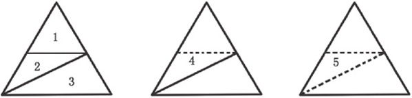
数图形（2）。按照数图形（1）的方法，可以看到一共有8个三角形。
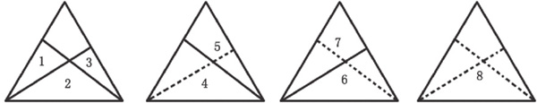
数图形（3）。按照数图形（1）的方法，可以看到一共有6个三角形。
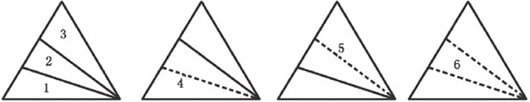
典型例题 2 你能数出下面图形中有几个长方形吗？
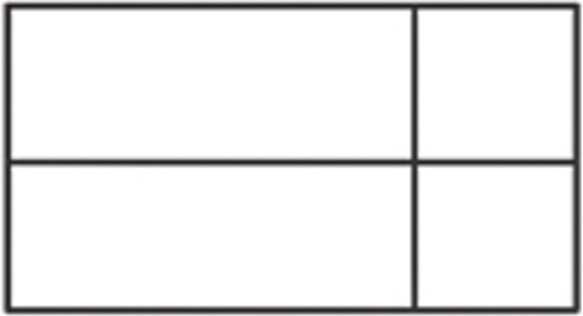
如下图所示，先数小的长方形，数量为4个，然后再逐步数由小长方形组合成的长方形。先横向组合，得到长方形5和6；再纵向组合，得到长方形7和8；最后得到由4个小长方形组合成的长方形9，所以一共有9个长方形。
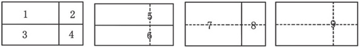
典型例题 3 你能数出下面的图形中各种图形的数量吗？
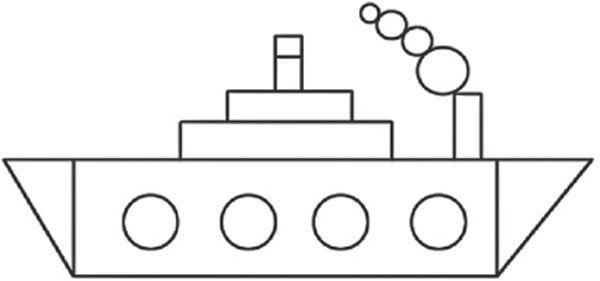
其中圆形有 个，三角形有 个，长方形有 个。
解答这种题型时，首先要看是否存在图形组合的情况，即有没有小三角形组合成大三角形，小长方形组合成大长方形的情况。仔细观察图形，发现有一处存在小长方形组合的情况，所以我们先数圆形和三角形，最后数长方形。
三角形（左图阴影部分）一共有2个，圆形（右图阴影部分）一共有8个。
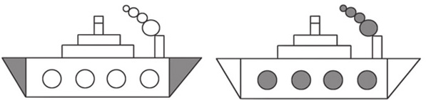
不存在图形组合情况的长方形（阴影部分）一共有4个，加上图形中的3个长方形，一共是4+3=7个长方形。
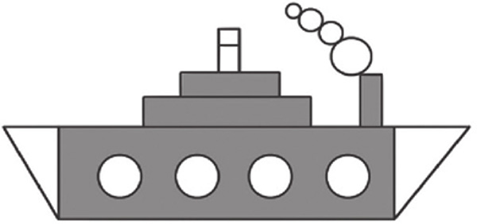
1.你能数出下面的图形中分别有几个三角形吗？
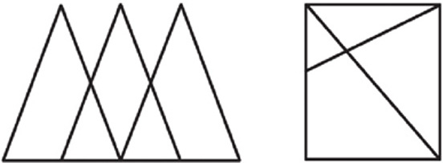
2.你能数出下面的图形中分别有几个长方形吗？
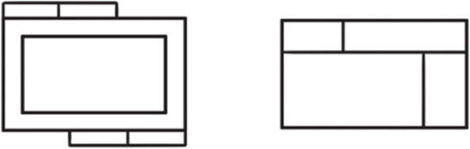
3.你能数出下面的图形中分别有几个正方形吗？
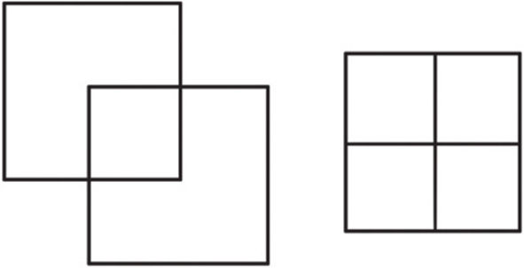
4.你能数出下面的图形中分别有几个带★的三角形和正方形吗？
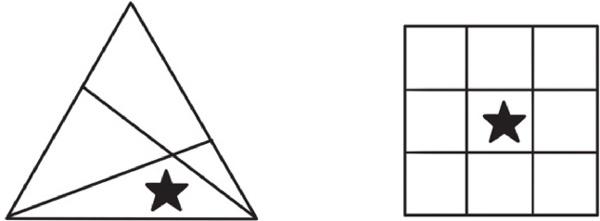
5.你能数出下面的图形中各种图形的数量吗？
其中圆形有 个，三角形有 个，长方形有 个。
6.你能数出下面的图形中各种图形的数量吗？
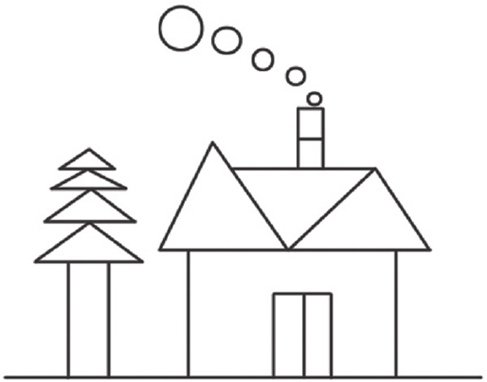
其中圆形有 个，三角形有 个，长方形有 个。